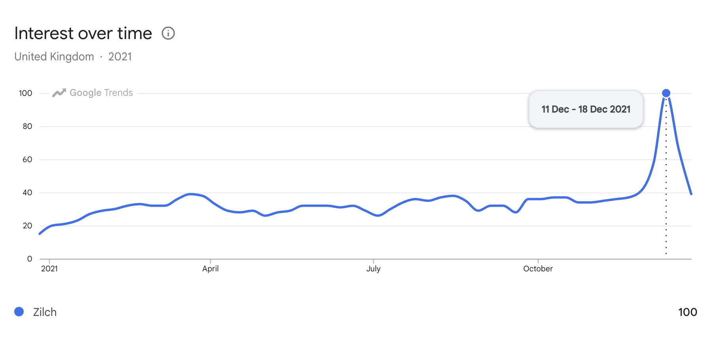

How To Run Referrals
A Guide to Building Successful Referral Programs By Boaz Sobrado
We gave new customers $10 for joining, and we gave them $10 more every time they referred a friend.
Refer-A-Friend, whereby existing users are encouraged to refer new customers to the product, is one of the most important and efficient user acquisition channels for digital consumer companies.
Fintech companies such as Revolut, Paypal or Wise acquire over half of their via incentivised or organic “word of mouth” campaigns Just over half of users coming from “word of mouth” or “referrals” seems to be the industry standard for FinTech companies.. Referrals campaigns are not just effective for fintech companies. Nikita Bier, currently the CPO of X (formerly Twitter) has made a career out of organically growing “viral” referral based apps such as YikYak and Gas. Evidently, RAF schemes have the potential to acquire a large volume users.
The best known referral campaign I’ve been involved in was Zilch’s in 2021. Zilch is a UK based consumer-finance app that reached the top of the App store in late 2021, off the back of a well-executed viral referral campaign.

The Google trends chart below shows how fast Zilch grew. When I joined Zilch in summer of 2021, we had less than 1 million registered customers. In September, we hit 1 million registered customers. By March 2022 we had exceeded 2 million registered customers. In December 2021 alone, we acquired 425k new registrations, primarily off the back of our Refer-A-Friend programmeThis is all publically available information based on Zilch Press Releases.
And yet, we were not doing anything radically new. We were running a playbook analogous to that of PayPal in 1999. PayPal’s meteoric rise via the Refer-A-Friend programme is not exactly a secret.See Elon Musk on the topic on Youtube Peter Thiel wrote about it in his bestselling book Zero To One which was published in 2014. This is curious given how much technology has changed since 1999. Nobody serious would run online advertising campaigns like they were run 25 years ago. So in a world with dwindling attention spans and consumers who are saturated by advertising, why are old Refer-A-Friend tactics still successful?
As always, the devil is in the details. But fundamentally, the human desire to share and be social is constant. The goal with this essay is to show the underlying mechanics, tactics and methods with which effective Refer-A-Friend campaigns can be run. I have run Refer-A-Friend campaigns in various B2C fintech companies (including Zilch) and have consulted on the topic. Throughout the essay I show various charts with data. Unless otherwise mentioned, this is synthetic data.